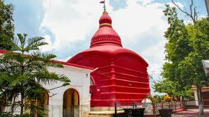
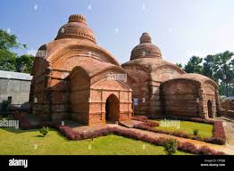
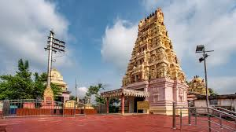

Tripura Sundari Temple


Location: Udaipur, Gomati district, Tripura
Deity: Goddess Tripura Sundari (an incarnation of Shakti/Parvati)
Architecture: Distinct Bengali hut-shaped (chala) roof, on a small hillock
One of 51 Shakti Peethas: Believed to be the spot where Sati's little toe fell
Also Known As: Matabari Temple
Built By: Maharaja Dhanya Manikya in 1501 AD
Sacred Pond: Kalyan Sagar beside the temple, home to rare tortoises
Festival: Grand Diwali Mela with massive devotee turnout
Importance: Major pilgrimage site in northeast India
Bhuvaneswari Temple


Location: Near Rudrasagar Lake, Udaipur, Tripura
Deity: Goddess Bhuvaneswari, a form of Durga/Parvati
Architecture: Features a curved Bengali roof style with elegant carvings
Built By: Maharaja Govinda Manikya in the 17th century
Literary Connection: Mentioned in Rabindranath Tagore’s plays Rajarshi and Bisarjan
Scenic Spot: Overlooks the lake and the old royal palace ruins
Historic Value: Reflects Tripura’s royal heritage and devotion to the goddess